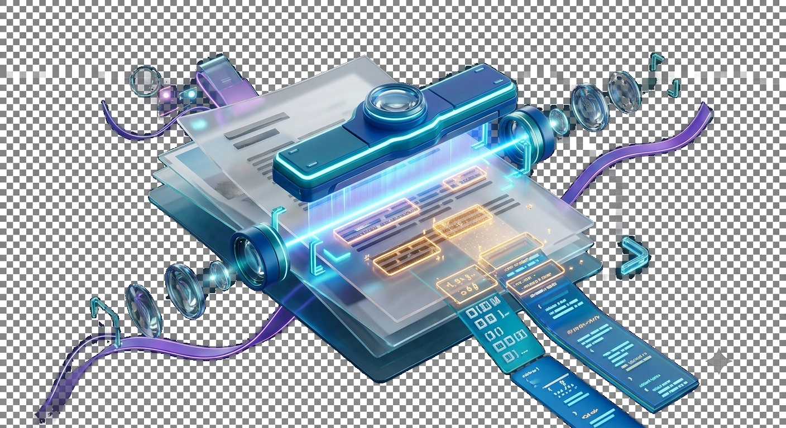

Open a clear image or scanned PDF
Scan a page containing Hindi matras, English words and numbers; compare extracted lines with the original.
Extract editable English and Hindi text from images and scanned PDFs with a browser-safe OCR engine.
Processed privately in your browser. OCR language data downloads only when needed.
Choose an image or scanned PDF.
OCR tries to infer characters from pixels; mixed scripts, blurry scans and table layouts add ambiguity.

Scan a page containing Hindi matras, English words and numbers; compare extracted lines with the original.
Extract text from a Hindi-English scanned document.
Check matras, punctuation and the reading order before reuse.
Scan a page containing Hindi matras, English words and numbers; compare extracted lines with the original.
A scan that reads 'कुल ₹250' alongside an English address needs careful language handling. Watch for confusion between 0/O, 1/l and Hindi vowel marks.
Use the real tool above to verify the result. The example illustrates the workflow, not a guaranteed outcome.
A scan that reads 'कुल ₹250' alongside an English address needs careful language handling. Watch for confusion between 0/O, 1/l and Hindi vowel marks.
OCR converts pixels into guesses about characters. Tables, low contrast and skewed scans often need manual proofreading before copying results into official records.
OCR interprets letter shapes in an image and tries to turn them into editable characters. A sharp scanned invoice with high contrast usually provides more reliable input than a tilted photograph with shadows and motion blur. Even when OCR produces fluent text, individual numbers, minus signs or names may be wrong. For an invoice total such as ₹1,850, confusing 8 with 3 creates a serious accounting error. Check critical fields against the source image rather than treating the resulting text as an authoritative record.
Language choice matters. English and Hindi have different scripts, glyph shapes and typical segmentation needs. A Hindi line can be misread if the OCR engine lacks the correct language model, and mixed Hindi-English documents may require appropriate recognition settings. If the interface exposes language selection, choose the languages actually present. A language model may need to load locally or from a remote resource before recognition begins; an offline browser cannot necessarily initialize it. Do not claim all scripts are supported unless the installed OCR data includes them.
Recognizing individual letters is only part of the task. A two-column brochure may be read left-to-right across both columns instead of down each column, which changes sentence order. Tables can lose row alignment when converted to plain text. If the output will be copied into a spreadsheet, compare at least several source rows manually before importing. A text file containing every visible number is not necessarily a correct table extraction. For complex layout preservation, use a document-specific workflow instead of relying on raw OCR text.
Preprocessing can help: rotate a sideways page, crop excessive surrounding background and improve contrast when appropriate. But oversharpening can introduce fake edges that confuse recognition. For a very small scan, increasing pixel dimensions does not reconstruct missing detail. Retake the photograph or rescan at a reasonable resolution when possible. A result with many nonsensical characters may reflect wrong orientation, language mismatch, low image quality or an unavailable recognition engine rather than a simple copy/export bug.
A browser-based OCR tool may process selected images locally once its recognition model is available, but other page scripts and language-model downloads can still use network resources. Do not upload sensitive identity documents to an unrelated external service without reviewing its policy. After export, compare headings, names, totals and unusual symbols against the original. Keep the source image as evidence of what was actually printed. OCR makes text editable; it does not certify translation, legal meaning or the accuracy of every recognized field.
A recognized sentence can read naturally while still replacing decimal points with commas or dropping minus signs. In a measurement table, "−0.5" versus "0.5" changes the sign, and "1,000" can mean a different value from "1.000" across locale conventions. Check numerical punctuation and dates against the scanned page, especially before copying OCR output into accounting or research software. Readable language alone is not an adequate validation criterion for technical documents.
A two-column document can contain perfectly recognisable letters but still produce a confusing paragraph if the engine reads across both columns line by line. Inspect reading order alongside character accuracy. Hindi OCR needs attention to vowel marks such as ि and ी, which can attach incorrectly when the scan is skewed or blurred. Use a high-contrast, straight scan and select the supported language mode before comparing text output. Never treat extracted text as a certified transcription of an ID or legal document; names, dates and amounts should be checked against the original image. Copy the result into an editor for correction only after reviewing potentially sensitive data.
Recognition and reading order can fail when the original scan has small or uneven glyphs.
Reading-order detection may treat two neighbouring text blocks as one continuous line, especially when the page has irregular spacing.
Low resolution, clipping or weak contrast can cause the text detector to miss that region.
No. Recognition extracts text, while reproducing complex page layout is a separate challenge.